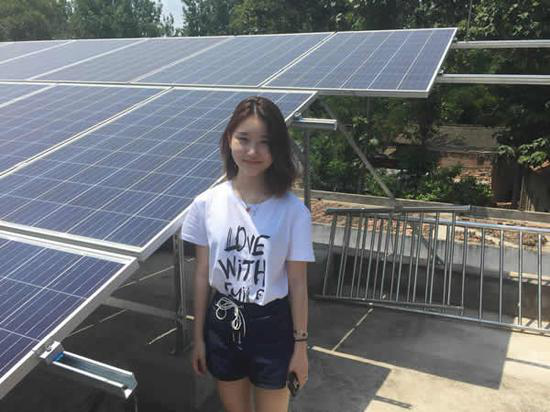

河南省百余贫困户家装分布式光伏电站并网
2017-07-29
7月12日，是令中国香港女孩黄萱怡特别高兴的日子：内地河南省洛宁县马店镇100多个贫困户家庭安装的分布式光伏电站，全部并网运行发电，成为该县第一批并入国家电网的屋顶光伏扶贫项目。
当晚，几个农民给黄萱怡打来电话，并网第一天，屋顶小电站发电量都在30千瓦时以上。这些电能由国家电网公司悉数收购，电费收益将按时打入贫困户银行卡中。 这批率先步入“光伏时代”的农户，都是根据国家农村扶贫标准认定的贫困户。他们装上户用光伏发电系统，可连续受益20年，10年内之内，偿还光伏企业投资后，每户每年将有3000元左右的发电纯收益；10年后每户年售电收入将达到7000元。
“我有一个美丽的愿望，长大以后能播种太阳”。黄萱怡的手机相册里，存着几十张贫困户家庭屋顶上闪闪发光的蓝色光伏电池板图片。这是她眼中最亮丽的风景，每每翻看的时候，她都会想起那首《种太阳》的儿歌。
“种太阳”不再只是儿时的梦想。黄萱怡参与“种”下的太阳，开始“生长”在豫西山区农村一块一块的屋顶之上，正在给贫困农户带来持续的“阳光收入”。 体验山区贫困萌发“种太阳”冲动 今年18岁的黄萱怡出生于深圳，2011年加入香港籍。 “小时候，她的‘破坏力’很强，喜欢把家里的小物件拆开，看它的零件装置，然后安装还原。”黄萱怡的母亲王女士告诉记者，从小到大，黄萱怡是一个爱思考、爱琢磨、爱动手的女孩，总有迸发不完的灵感，问不完的为什么。上课的时候，黄萱怡常常能从一个知识点延伸到很多方面，有时候老师也会被她的问题难倒。
“老师说太阳能板遇到光线，能将光源转变为电压。小学五年级的时候，我利用一块太阳能板，用电缆线将电能传输到风扇的马达上，通过齿轮的传动让风扇转起来。”黄萱怡说。 黄萱怡对光生伏特效应的兴趣特别浓厚，一有时间就埋头摆弄大堆的光敏二极管、三极管和光电池等光电元器件。父母在家里为她设置了一间“萱怡太阳能实验室”，用卤光灯模拟太阳发光，并配备了测试仪器。借此，她对太阳能电池板发电原理有了亲身体验。 初二时，黄萱怡用一块15V的太阳能电池板，2块6V蓄电池，加上电阻和排气扇等部件，组装了自己的太阳能吸油烟机。一次向蓄电池充电6小时，可提供工作时间30小时左右。 2015年暑假期间，黄萱怡加入一个香港赴大陆进行文化教育交流的参访团，第一次来到河南省。在地处豫西的洛宁县马店镇，黄萱怡参观了农村学校，参加了农事劳动和农家生活体验。当地农民勤劳朴实、热情好客，但不少家庭年人均纯收入低于国家划定的2736元的贫困线。
洛宁县属秦巴山集中连片特殊困难地区，是国家扶贫开发工作重点县。该县资源匮乏，“十年九旱”，粮食、烟叶、水果等主导产业发展很不稳定。该县贫困发生率达6.4%，，有98个贫困村，3.5万贫困人口。
黄萱怡在几个村子对农户致贫原因做了调查统计，发现将近一半的贫困户缺土地、缺劳力、缺技术，或体弱多病、身有残疾。近距离接触这些弱势家庭，黄萱怡感到很不安。 “得知洛宁县全年日照时数超过2000小时，适合光伏发电时，我心里一动。”黄萱怡说。 此前的2014年10月，“光伏扶贫”已在内地正式启动，其中一种方式是为贫困户安装分布式光伏发电系统，以增加他们的基本生活收入。贫困户安装太阳能组件发电系统发出的电，国家电网以每千瓦时0.98元的价格全部收购。
对此，黄萱怡兴奋不已：“我知道自己能为这里的脱贫做点什么了，哪怕是微薄的力量。” 专利发明奖金捐建光伏示范项目 参访团在河南的活动结束后，黄萱怡没有马上返回香港，而特意访问了河南省内的两家光伏企业。她急于亲眼看到太阳能晶硅电池片是怎样生产出来的，同时想知道这些产品怎样才能更好地运用于贫困地区农村。 在光伏切割刃料生产企业——河南易成新能源公司，以及该公司旗下的光伏企业——河南华沐通途公司，她被特批在生产车间“跟班”一周时间。从公司领导到技术人员，对这个痴迷光伏、头脑灵活的香港女孩充满好感。她把公司技术人员提出的晶硅片切割刃料浮选除杂效率不高问题，带回香港用心琢磨如何解决。
黄萱怡没想到的是，上述两家企业，不仅满足了她的好奇心，还会助力她在洛宁县“种太阳”。 回到香港后，黄萱怡几乎每周都要跟洛宁县马店镇的干部、村干部和农民打电话，探讨贫困农户发展屋顶光伏发电增收的可能性。 她利用公众假期，专程到首个“国家高比例可再生能源示范县”——安徽省金寨县考察分布式光伏扶贫电站的运营情况。 对于如何提高晶硅片切割刃料浮选除杂效率，她在请教香港理工大学的相关专家之后，自制模型进行模拟实验，初步有了自己的想法。
2015年一放寒假，黄萱怡就亟不可待赶往河南，实施她的“种太阳”计划。 “在贫困户中推广光伏发电，难度超乎想象。”黄萱怡说，农民对光伏发电知之不多，担心安装光伏板会不会压坏屋顶造成漏水，会不会产生辐射，打雷了会不会有危险等。黄萱怡挨家挨户走访，向农民讲解光伏发电常识，掰着指头跟农民算光伏发电收益账。